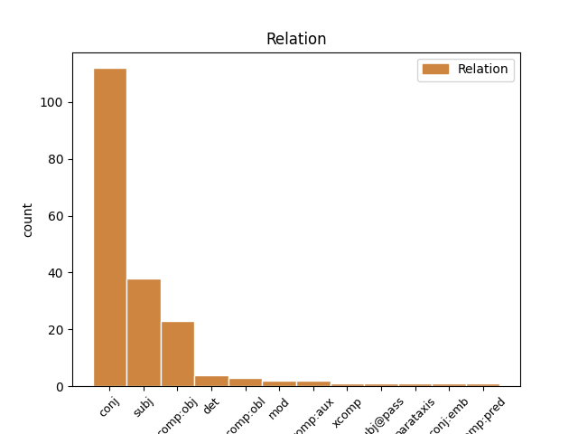
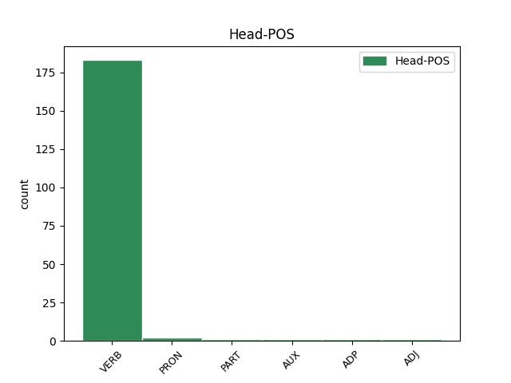
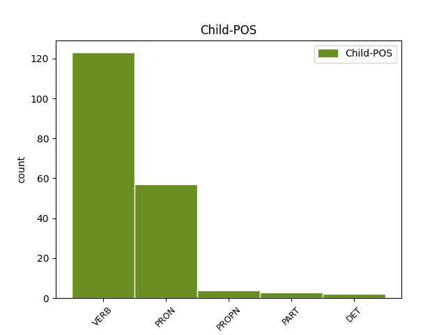

Distribution of features within this leaf



Agreement Rules sorted by frequency.
- When the dependent token is the conjunct(conj) of the head token, and the head token is VERB and the dependent token is VERB.
1 Sumunod _ _ _ _ 0 _ _ _
2 ang _ _ _ _ 0 _ _ _
3 siyam _ _ _ _ 0 _ _ _
4 na _ _ _ _ 0 _ _ _
5 taon _ _ _ _ 0 _ _ _
6 , _ _ _ _ 0 _ _ _
7 noong _ _ _ _ 0 _ _ _
8 1735 _ _ _ _ 0 _ _ _
9 , _ _ _ _ 0 _ _ _
10 si _ _ _ _ 0 _ _ _
11 Count _ _ _ _ 0 _ _ _
12 Nicholas _ _ _ _ 0 _ _ _
13 Von _ _ _ _ 0 _ _ _
14 Zinzendorf _ _ _ _ 0 _ _ _
15 , _ _ _ _ 0 _ _ _
16 na _ _ _ _ 0 _ _ _
17 nagtatag _ _ _ _ 0 _ _ _
18 ng _ _ _ _ 0 _ _ _
19 Moravian _ _ _ _ 0 _ _ _
20 Movement _ _ _ _ 0 _ _ _
21 , _ _ _ _ 0 _ _ _
22 ay _ _ _ _ 0 _ _ _
23 nagpangaral nagpangaral VERB _ Case=NomAcc|Form=Ecl|Gender=Fem|Number=Sing 0 _ _ _
24 at _ _ _ _ 0 _ _ _
25 nagpasiklab agpasiklab VERB _ Case=NomAcc|Form=Ecl|Gender=Fem|Number=Sing 23 conj _ _
26 ng _ _ _ _ 0 _ _ _
27 revival _ _ _ _ 0 _ _ _
28 sa _ _ _ _ 0 _ _ _
29 buong _ _ _ _ 0 _ _ _
30 Sweden _ _ _ _ 0 _ _ _
31 hanggang _ _ _ _ 0 _ _ _
32 siya _ _ _ _ 0 _ _ _
33 ay _ _ _ _ 0 _ _ _
34 naaresto _ _ _ _ 0 _ _ _
35 at _ _ _ _ 0 _ _ _
36 ipinatapon _ _ _ _ 0 _ _ _
37 sa _ _ _ _ 0 _ _ _
38 labas _ _ _ _ 0 _ _ _
39 ng _ _ _ _ 0 _ _ _
40 bansa _ _ _ _ 0 _ _ _
41 . _ _ _ _ 0 _ _ _
1 Siya _ _ _ _ 0 _ _ _
2 rin _ _ _ _ 0 _ _ _
3 ay _ _ _ _ 0 _ _ _
4 nasa _ _ _ _ 0 _ _ _
5 harap _ _ _ _ 0 _ _ _
6 ng _ _ _ _ 0 _ _ _
7 mga _ _ _ _ 0 _ _ _
8 pagpapaunlad _ _ _ _ 0 _ _ _
9 sa _ _ _ _ 0 _ _ _
10 relasyon _ _ _ _ 0 _ _ _
11 sa _ _ _ _ 0 _ _ _
12 pagitan _ _ _ _ 0 _ _ _
13 ng _ _ _ _ 0 _ _ _
14 emperador _ _ _ _ 0 _ _ _
15 at _ _ _ _ 0 _ _ _
16 ang _ _ _ _ 0 _ _ _
17 pagka _ _ _ _ 0 _ _ _
18 - _ _ _ _ 0 _ _ _
19 papa _ _ _ _ 0 _ _ _
20 noong _ _ _ _ 0 _ _ _
21 mga _ _ _ _ 0 _ _ _
22 taon _ _ _ _ 0 _ _ _
23 bago _ _ _ _ 0 _ _ _
24 siya siya PRON _ Case=Nom|Gender=Fem|Number=Sing|Person=3|PronType=Prs 25 subj _ _
25 naging nagi VERB _ Aspect=Perf|Definite=Ind|Gender=Fem|Number=Sing|Tense=Past|VerbForm=Part|Voice=Act 0 _ _ _
26 papa _ _ _ _ 0 _ _ _
27 . _ _ _ _ 0 _ _ _
1 Si _ _ _ _ 0 _ _ _
2 Dong _ _ _ _ 0 _ _ _
3 - _ _ _ _ 0 _ _ _
4 yeon _ _ _ _ 0 _ _ _
5 ay _ _ _ _ 0 _ _ _
6 humingi _ _ _ _ 0 _ _ _
7 ng _ _ _ _ 0 _ _ _
8 paumanhin _ _ _ _ 0 _ _ _
9 kay _ _ _ _ 0 _ _ _
10 Jung _ _ _ _ 0 _ _ _
11 - _ _ _ _ 0 _ _ _
12 tae _ _ _ _ 0 _ _ _
13 at _ _ _ _ 0 _ _ _
14 sa _ _ _ _ 0 _ _ _
15 kanyang _ _ _ _ 0 _ _ _
16 anak _ _ _ _ 0 _ _ _
17 dahil _ _ _ _ 0 _ _ _
18 sa _ _ _ _ 0 _ _ _
19 kontrobersiya _ _ _ _ 0 _ _ _
20 at _ _ _ _ 0 _ _ _
21 i _ _ _ _ 0 _ _ _
22 - _ _ _ _ 0 _ _ _
23 sinigurado sinigurado VERB _ Gender=Masc|Number=Sing|VerbForm=Part 0 _ _ _
24 niya niya PRON _ Case=Dat|Gender=Masc|Number=Sing|Person=3|PronType=Prs 23 comp:obj _ _
25 sa _ _ _ _ 0 _ _ _
26 mga _ _ _ _ 0 _ _ _
27 tao _ _ _ _ 0 _ _ _
28 na _ _ _ _ 0 _ _ _
29 ang _ _ _ _ 0 _ _ _
30 aktor _ _ _ _ 0 _ _ _
31 at _ _ _ _ 0 _ _ _
32 ang _ _ _ _ 0 _ _ _
33 kanyang _ _ _ _ 0 _ _ _
34 anak _ _ _ _ 0 _ _ _
35 ay _ _ _ _ 0 _ _ _
36 wala _ _ _ _ 0 _ _ _
37 doon _ _ _ _ 0 _ _ _
38 upang _ _ _ _ 0 _ _ _
39 i _ _ _ _ 0 _ _ _
40 - _ _ _ _ 0 _ _ _
41 kampanya _ _ _ _ 0 _ _ _
42 siya _ _ _ _ 0 _ _ _
43 . _ _ _ _ 0 _ _ _
1 Sa _ _ _ _ 0 _ _ _
2 Hong _ _ _ _ 0 _ _ _
3 Kong _ _ _ _ 0 _ _ _
4 niya _ _ _ _ 0 _ _ _
5 nakilala _ _ _ _ 0 _ _ _
6 si _ _ _ _ 0 _ _ _
7 Heneral _ _ _ _ 0 _ _ _
8 Emilio _ _ _ _ 0 _ _ _
9 Aguinaldo _ _ _ _ 0 _ _ _
10 at _ _ _ _ 0 _ _ _
11 sa _ _ _ _ 0 _ _ _
12 Indo _ _ _ _ 0 _ _ _
13 - _ _ _ _ 0 _ _ _
14 China _ _ _ _ 0 _ _ _
15 at _ _ _ _ 0 _ _ _
16 Shanghai _ _ _ _ 0 _ _ _
17 naman _ _ _ _ 0 _ _ _
18 niya niya PRON _ Case=Dat|Gender=Masc|Number=Sing|Person=3|PronType=Prs 19 comp:obl _ _
19 nakilala nakilala VERB _ Animacy=Anim|Aspect=Perf|Gender=Masc|Number=Plur|Polarity=Pos|Tense=Past|VerbForm=Part 0 _ _ _
20 ang _ _ _ _ 0 _ _ _
21 nagtatag _ _ _ _ 0 _ _ _
22 at _ _ _ _ 0 _ _ _
23 ang _ _ _ _ 0 _ _ _
24 unang _ _ _ _ 0 _ _ _
25 Pangulo _ _ _ _ 0 _ _ _
26 ng _ _ _ _ 0 _ _ _
27 Republika _ _ _ _ 0 _ _ _
28 ng _ _ _ _ 0 _ _ _
29 Tsina _ _ _ _ 0 _ _ _
30 na _ _ _ _ 0 _ _ _
31 si _ _ _ _ 0 _ _ _
32 Dr _ _ _ _ 0 _ _ _
33 . _ _ _ _ 0 _ _ _
1 Malalim _ _ _ _ 0 _ _ _
2 ng _ _ _ _ 0 _ _ _
3 convection _ _ _ _ 0 _ _ _
4 na na PART _ Case=Gen|Definite=Def|Gender=Fem|Number=Sing|PronType=Art 5 det _ _
5 nakapaloob nakapaloob VERB _ Case=NomAcc|Form=Ecl|Gender=Fem|Number=Sing 0 _ _ _
6 sa _ _ _ _ 0 _ _ _
7 malaki _ _ _ _ 0 _ _ _
8 ngunit _ _ _ _ 0 _ _ _
9 mahinang _ _ _ _ 0 _ _ _
10 circulation _ _ _ _ 0 _ _ _
11 , _ _ _ _ 0 _ _ _
12 ito _ _ _ _ 0 _ _ _
13 ay _ _ _ _ 0 _ _ _
14 pinalakas _ _ _ _ 0 _ _ _
15 ng _ _ _ _ 0 _ _ _
16 Tropical _ _ _ _ 0 _ _ _
17 Upper _ _ _ _ 0 _ _ _
18 Tropospheric _ _ _ _ 0 _ _ _
19 Trough _ _ _ _ 0 _ _ _
20 na _ _ _ _ 0 _ _ _
21 nasa _ _ _ _ 0 _ _ _
22 silangan _ _ _ _ 0 _ _ _
23 . _ _ _ _ 0 _ _ _
1 Siya _ _ _ _ 0 _ _ _
2 ay _ _ _ _ 0 _ _ _
3 pinalitan _ _ _ _ 0 _ _ _
4 ni _ _ _ _ 0 _ _ _
5 Yasuo _ _ _ _ 0 _ _ _
6 Fukuda _ _ _ _ 0 _ _ _
7 na _ _ _ _ 0 _ _ _
8 nagpasimula agpasimul VERB _ Case=NomAcc|Form=Ecl|Gender=Fem|Number=Sing 0 _ _ _
9 ng _ _ _ _ 0 _ _ _
10 mga _ _ _ _ 0 _ _ _
11 punong _ _ _ _ 0 _ _ _
12 ministr _ _ _ _ 0 _ _ _
13 ona _ _ _ _ 0 _ _ _
14 hindi _ _ _ _ 0 _ _ _
15 nagpanatili agpanatili VERB _ Case=NomAcc|Form=Ecl|Gender=Fem|Number=Sing 8 mod _ _
16 ng _ _ _ _ 0 _ _ _
17 posisyon _ _ _ _ 0 _ _ _
18 sa _ _ _ _ 0 _ _ _
19 higit _ _ _ _ 0 _ _ _
20 sa _ _ _ _ 0 _ _ _
21 isang _ _ _ _ 0 _ _ _
22 taon _ _ _ _ 0 _ _ _
23 . _ _ _ _ 0 _ _ _
1 Ang _ _ _ _ 0 _ _ _
2 alinmang _ _ _ _ 0 _ _ _
3 buwan _ _ _ _ 0 _ _ _
4 na na DET _ Case=Gen|Definite=Def|Gender=Fem|Number=Sing|PronType=Art 5 det _ _
5 nagsisimula agsisimula VERB _ Case=NomAcc|Form=Ecl|Gender=Fem|Number=Sing 0 _ _ _
6 sa _ _ _ _ 0 _ _ _
7 Linggo _ _ _ _ 0 _ _ _
8 ay _ _ _ _ 0 _ _ _
9 mayroong _ _ _ _ 0 _ _ _
10 Biyernes _ _ _ _ 0 _ _ _
11 sa _ _ _ _ 0 _ _ _
12 ika-13 _ _ _ _ 0 _ _ _
13 araw _ _ _ _ 0 _ _ _
14 . _ _ _ _ 0 _ _ _
1 Dahil _ _ _ _ 0 _ _ _
2 sa _ _ _ _ 0 _ _ _
3 narinig _ _ _ _ 0 _ _ _
4 nagpahatid agpahatid VERB _ Case=NomAcc|Form=Ecl|Gender=Fem|Number=Sing 0 _ _ _
5 si _ _ _ _ 0 _ _ _
6 Maria maria PROPN _ Case=Nom|Gender=Fem|Number=Sing 4 subj _ _
7 sa _ _ _ _ 0 _ _ _
8 kaniyang _ _ _ _ 0 _ _ _
9 silid _ _ _ _ 0 _ _ _
10 . _ _ _ _ 0 _ _ _
1 Hindi _ _ _ _ 0 _ _ _
2 pabor _ _ _ _ 0 _ _ _
3 ang _ _ _ _ 0 _ _ _
4 mga _ _ _ _ 0 _ _ _
5 magulang _ _ _ _ 0 _ _ _
6 niya _ _ _ _ 0 _ _ _
7 kay _ _ _ _ 0 _ _ _
8 Henry _ _ _ _ 0 _ _ _
9 at _ _ _ _ 0 _ _ _
10 nagbanta nagbanta VERB _ Case=NomAcc|Form=Ecl|Gender=Masc|Number=Sing 0 _ _ _
11 na _ _ _ _ 0 _ _ _
12 pag _ _ _ _ 0 _ _ _
13 hindi _ _ _ _ 0 _ _ _
14 itinigil _ _ _ _ 0 _ _ _
15 ang _ _ _ _ 0 _ _ _
16 relasyon _ _ _ _ 0 _ _ _
17 ay _ _ _ _ 0 _ _ _
18 puputulin puputulin VERB _ Animacy=Inan|Aspect=Perf|Gender=Masc|Number=Sing|Polarity=Pos|Tense=Past|VerbForm=Part 10 comp:obj _ _
19 ang _ _ _ _ 0 _ _ _
20 kanyang _ _ _ _ 0 _ _ _
21 sustento _ _ _ _ 0 _ _ _
22 sa _ _ _ _ 0 _ _ _
23 pag _ _ _ _ 0 _ _ _
24 - _ _ _ _ 0 _ _ _
25 aaral _ _ _ _ 0 _ _ _
26 . _ _ _ _ 0 _ _ _
1 Malimit _ _ _ _ 0 _ _ _
2 siyang siyang PRON _ Case=Dat|Gender=Masc|Number=Sing|Person=3|PronType=Prs|Reflex=Yes 0 _ _ _
3 nagbibigay nagbibigay VERB _ Case=NomAcc|Form=Ecl|Gender=Masc|Number=Sing 2 comp:aux _ _
4 ng _ _ _ _ 0 _ _ _
5 iba _ _ _ _ 0 _ _ _
6 pang _ _ _ _ 0 _ _ _
7 mga _ _ _ _ 0 _ _ _
8 paglilingkod _ _ _ _ 0 _ _ _
9 na _ _ _ _ 0 _ _ _
10 pangkortesiya _ _ _ _ 0 _ _ _
11 katulad _ _ _ _ 0 _ _ _
12 ng _ _ _ _ 0 _ _ _
13 paglagda _ _ _ _ 0 _ _ _
14 para _ _ _ _ 0 _ _ _
15 sa _ _ _ _ 0 _ _ _
16 mga _ _ _ _ 0 _ _ _
17 pakete _ _ _ _ 0 _ _ _
18 o _ _ _ _ 0 _ _ _
19 parsela _ _ _ _ 0 _ _ _
20 , _ _ _ _ 0 _ _ _
21 pagbubuhat _ _ _ _ 0 _ _ _
22 ng _ _ _ _ 0 _ _ _
23 mga _ _ _ _ 0 _ _ _
24 bagahe _ _ _ _ 0 _ _ _
25 sa _ _ _ _ 0 _ _ _
26 pagitan _ _ _ _ 0 _ _ _
27 ng _ _ _ _ 0 _ _ _
28 asensor _ _ _ _ 0 _ _ _
29 at _ _ _ _ 0 _ _ _
30 ng _ _ _ _ 0 _ _ _
31 kalye _ _ _ _ 0 _ _ _
32 , _ _ _ _ 0 _ _ _
33 o _ _ _ _ 0 _ _ _
34 pagtawag _ _ _ _ 0 _ _ _
35 ng _ _ _ _ 0 _ _ _
36 taksi _ _ _ _ 0 _ _ _
37 para _ _ _ _ 0 _ _ _
38 sa _ _ _ _ 0 _ _ _
39 mga _ _ _ _ 0 _ _ _
40 nakatira _ _ _ _ 0 _ _ _
41 sa _ _ _ _ 0 _ _ _
42 gusali _ _ _ _ 0 _ _ _
43 o _ _ _ _ 0 _ _ _
44 para _ _ _ _ 0 _ _ _
45 sa _ _ _ _ 0 _ _ _
46 mga _ _ _ _ 0 _ _ _
47 bisita _ _ _ _ 0 _ _ _
48 . _ _ _ _ 0 _ _ _
1 Mula _ _ _ _ 0 _ _ _
2 1952–1956 _ _ _ _ 0 _ _ _
3 , _ _ _ _ 0 _ _ _
4 lumabasa lumabasa VERB _ Case=Nom|Degree=Pos|Gender=Fem|Number=Sing 5 comp:pred _ _
5 siya siya PRON _ Case=Nom|Gender=Fem|Number=Sing|Person=3|PronType=Prs 0 _ _ _
6 sa _ _ _ _ 0 _ _ _
7 17 _ _ _ _ 0 _ _ _
8 na _ _ _ _ 0 _ _ _
9 pelikula _ _ _ _ 0 _ _ _
10 . _ _ _ _ 0 _ _ _
1 Nagtrabaho _ _ _ _ 0 _ _ _
2 sandali sandať VERB _ Animacy=Anim|Aspect=Imp|Gender=Masc|Number=Plur|Polarity=Pos|Tense=Past|VerbForm=Part 0 _ _ _
3 si _ _ _ _ 0 _ _ _
4 Jorgensen Jorgensen PROPN _ Animacy=Anim|Case=Acc|Gender=Masc|Number=Sing 2 comp:obj _ _
5 para _ _ _ _ 0 _ _ _
6 sa _ _ _ _ 0 _ _ _
7 Pathé _ _ _ _ 0 _ _ _
8 News _ _ _ _ 0 _ _ _
9 . _ _ _ _ 0 _ _ _
1 Sa _ _ _ _ 0 _ _ _
2 panahong _ _ _ _ 0 _ _ _
3 ito _ _ _ _ 0 _ _ _
4 naipasa _ _ _ _ 0 _ _ _
5 ang _ _ _ _ 0 _ _ _
6 Batas _ _ _ _ 0 _ _ _
7 Jones _ _ _ _ 0 _ _ _
8 ( _ _ _ _ 0 _ _ _
9 Jones _ _ _ _ 0 _ _ _
10 Act _ _ _ _ 0 _ _ _
11 ) _ _ _ _ 0 _ _ _
12 , _ _ _ _ 0 _ _ _
13 nagtatanggal nagtatanggal VERB _ Case=NomAcc|Form=Ecl|Gender=Fem|Number=Sing 0 _ _ _
14 sa _ _ _ _ 0 _ _ _
15 Komisyon _ _ _ _ 0 _ _ _
16 sa _ _ _ _ 0 _ _ _
17 Pilipinas _ _ _ _ 0 _ _ _
18 ng _ _ _ _ 0 _ _ _
19 Estados _ _ _ _ 0 _ _ _
20 Unidos _ _ _ _ 0 _ _ _
21 at _ _ _ _ 0 _ _ _
22 nagbibigay nagbibigay VERB _ Case=NomAcc|Form=Ecl|Gender=Fem|Number=Sing 13 conj:emb _ _
23 ng _ _ _ _ 0 _ _ _
24 mas _ _ _ _ 0 _ _ _
25 mataas _ _ _ _ 0 _ _ _
26 na _ _ _ _ 0 _ _ _
27 antas _ _ _ _ 0 _ _ _
28 ng _ _ _ _ 0 _ _ _
29 pamamahala _ _ _ _ 0 _ _ _
30 sa _ _ _ _ 0 _ _ _
31 mga _ _ _ _ 0 _ _ _
32 Pilipino _ _ _ _ 0 _ _ _
33 . _ _ _ _ 0 _ _ _
1 Si _ _ _ _ 0 _ _ _
2 John _ _ _ _ 0 _ _ _
3 O'Shea _ _ _ _ 0 _ _ _
4 ang _ _ _ _ 0 _ _ _
5 gumawa _ _ _ _ 0 _ _ _
6 ng _ _ _ _ 0 _ _ _
7 goal _ _ _ _ 0 _ _ _
8 na na PART _ Case=Gen|Definite=Def|Gender=Fem|Number=Sing|PronType=Art 0 _ _ _
9 nagdulot nagdulot VERB _ Case=NomAcc|Form=Ecl|Gender=Fem|Number=Sing 8 comp:obj _ _
10 ng _ _ _ _ 0 _ _ _
11 tabla _ _ _ _ 0 _ _ _
12 sa _ _ _ _ 0 _ _ _
13 ika _ _ _ _ 0 _ _ _
14 - _ _ _ _ 0 _ _ _
15 apat _ _ _ _ 0 _ _ _
16 na _ _ _ _ 0 _ _ _
17 minuto _ _ _ _ 0 _ _ _
18 sa _ _ _ _ 0 _ _ _
19 oras _ _ _ _ 0 _ _ _
20 ng _ _ _ _ 0 _ _ _
21 pagkapigil _ _ _ _ 0 _ _ _
22 . _ _ _ _ 0 _ _ _
Disagree Examples:
1 Ang _ _ _ _ 0 _ _ _
2 amplifier _ _ _ _ 0 _ _ _
3 circuit _ _ _ _ 0 _ _ _
4 ay _ _ _ _ 0 _ _ _
5 karaniwang _ _ _ _ 0 _ _ _
6 bumabaliktad bumabaliktad VERB _ Aspect=Perf|Definite=Ind|Gender=Neut|Number=Sing|VerbForm=Part|Voice=Pass 0 _ _ _
7 ng _ _ _ _ 0 _ _ _
8 signal _ _ _ _ 0 _ _ _
9 mula _ _ _ _ 0 _ _ _
10 sa _ _ _ _ 0 _ _ _
11 oscillator _ _ _ _ 0 _ _ _
12 at _ _ _ _ 0 _ _ _
13 nagpapakaing nagpapakaing VERB _ Case=NomAcc|Form=Ecl|Gender=Fem|Number=Sing 6 conj _ _
14 pabalik _ _ _ _ 0 _ _ _
15 ng _ _ _ _ 0 _ _ _
16 isang _ _ _ _ 0 _ _ _
17 bahagi _ _ _ _ 0 _ _ _
18 sa _ _ _ _ 0 _ _ _
19 oscillator _ _ _ _ 0 _ _ _
20 upang _ _ _ _ 0 _ _ _
21 panatilihin _ _ _ _ 0 _ _ _
22 ang _ _ _ _ 0 _ _ _
23 oscillation _ _ _ _ 0 _ _ _
24 . _ _ _ _ 0 _ _ _
1 Ang _ _ _ _ 0 _ _ _
2 Cannabidiol _ _ _ _ 0 _ _ _
3 ay _ _ _ _ 0 _ _ _
4 naipakitang _ _ _ _ 0 _ _ _
5 nagbawas nagbawas VERB _ Case=NomAcc|Form=Ecl|Gender=Masc|Number=Sing 0 _ _ _
6 ng _ _ _ _ 0 _ _ _
7 paglago _ _ _ _ 0 _ _ _
8 ng _ _ _ _ 0 _ _ _
9 mga _ _ _ _ 0 _ _ _
10 selulang _ _ _ _ 0 _ _ _
11 kanser _ _ _ _ 0 _ _ _
12 sa _ _ _ _ 0 _ _ _
13 suso _ _ _ _ 0 _ _ _
14 in _ _ _ _ 0 _ _ _
15 vitro _ _ _ _ 0 _ _ _
16 at _ _ _ _ 0 _ _ _
17 nagbawas nagbawas VERB _ Case=NomAcc|Form=Ecl|Gender=Fem|Number=Sing 5 conj _ _
18 ng _ _ _ _ 0 _ _ _
19 kanilang _ _ _ _ 0 _ _ _
20 pagsalakay _ _ _ _ 0 _ _ _
21 . _ _ _ _ 0 _ _ _
1 Ang _ _ _ _ 0 _ _ _
2 dalawang _ _ _ _ 0 _ _ _
3 ito _ _ _ _ 0 _ _ _
4 ay _ _ _ _ 0 _ _ _
5 nagtalo nagtalo VERB _ Aspect=Perf|Definite=Ind|Gender=Neut|Number=Sing|VerbForm=Part|Voice=Pass 0 _ _ _
6 at _ _ _ _ 0 _ _ _
7 hindi _ _ _ _ 0 _ _ _
8 nagkasundo nagkasundo VERB _ Gender=Masc|HebBinyan=HITPAEL|Number=Sing|Person=1,2,3|VerbForm=Part 5 conj _ _
9 dahil _ _ _ _ 0 _ _ _
10 sa _ _ _ _ 0 _ _ _
11 pagtatanggol _ _ _ _ 0 _ _ _
12 ni _ _ _ _ 0 _ _ _
13 Turing _ _ _ _ 0 _ _ _
14 ng _ _ _ _ 0 _ _ _
15 pormalismo _ _ _ _ 0 _ _ _
16 samantalang _ _ _ _ 0 _ _ _
17 si _ _ _ _ 0 _ _ _
18 Wittgenstein _ _ _ _ 0 _ _ _
19 ay _ _ _ _ 0 _ _ _
20 nangatwiran _ _ _ _ 0 _ _ _
21 na _ _ _ _ 0 _ _ _
22 ang _ _ _ _ 0 _ _ _
23 matematika _ _ _ _ 0 _ _ _
24 ay _ _ _ _ 0 _ _ _
25 hindi _ _ _ _ 0 _ _ _
26 tumutuklas _ _ _ _ 0 _ _ _
27 ng _ _ _ _ 0 _ _ _
28 mga _ _ _ _ 0 _ _ _
29 basehang _ _ _ _ 0 _ _ _
30 katotohanan _ _ _ _ 0 _ _ _
31 kundi _ _ _ _ 0 _ _ _
32 lumilikha _ _ _ _ 0 _ _ _
33 lamang _ _ _ _ 0 _ _ _
34 nito _ _ _ _ 0 _ _ _
35 . _ _ _ _ 0 _ _ _
1 Ang _ _ _ _ 0 _ _ _
2 Heart _ _ _ _ 0 _ _ _
3 Can _ _ _ _ 0 _ _ _
4 foundation _ _ _ _ 0 _ _ _
5 ay _ _ _ _ 0 _ _ _
6 nagdadala nagdadala VERB _ Case=NomAcc|Form=Ecl|Gender=Masc|Number=Sing 0 _ _ _
7 sa _ _ _ _ 0 _ _ _
8 kanya _ _ _ _ 0 _ _ _
9 sa _ _ _ _ 0 _ _ _
10 serye _ _ _ _ 0 _ _ _
11 ng _ _ _ _ 0 _ _ _
12 mga _ _ _ _ 0 _ _ _
13 mall _ _ _ _ 0 _ _ _
14 shows _ _ _ _ 0 _ _ _
15 at _ _ _ _ 0 _ _ _
16 naglagay naglagay VERB _ Case=NomAcc|Form=Ecl|Gender=Fem|Number=Sing 6 conj _ _
17 ng _ _ _ _ 0 _ _ _
18 mga _ _ _ _ 0 _ _ _
19 lata _ _ _ _ 0 _ _ _
20 para _ _ _ _ 0 _ _ _
21 sa _ _ _ _ 0 _ _ _
22 donasyon _ _ _ _ 0 _ _ _
23 sa _ _ _ _ 0 _ _ _
24 mga _ _ _ _ 0 _ _ _
25 kilalang _ _ _ _ 0 _ _ _
26 establisyamento _ _ _ _ 0 _ _ _
27 para _ _ _ _ 0 _ _ _
28 makapagipon _ _ _ _ 0 _ _ _
29 ng _ _ _ _ 0 _ _ _
30 pera _ _ _ _ 0 _ _ _
31 para _ _ _ _ 0 _ _ _
32 sa _ _ _ _ 0 _ _ _
33 mga _ _ _ _ 0 _ _ _
34 kabataang _ _ _ _ 0 _ _ _
35 nilalayong _ _ _ _ 0 _ _ _
36 tulungan _ _ _ _ 0 _ _ _
37 ng _ _ _ _ 0 _ _ _
38 charity _ _ _ _ 0 _ _ _
39 . _ _ _ _ 0 _ _ _
1 Ang _ _ _ _ 0 _ _ _
2 henetika _ _ _ _ 0 _ _ _
3 ang _ _ _ _ 0 _ _ _
4 pag _ _ _ _ 0 _ _ _
5 - _ _ _ _ 0 _ _ _
6 aaral _ _ _ _ 0 _ _ _
7 ng _ _ _ _ 0 _ _ _
8 mga _ _ _ _ 0 _ _ _
9 hene _ _ _ _ 0 _ _ _
10 , _ _ _ _ 0 _ _ _
11 kung _ _ _ _ 0 _ _ _
12 ano _ _ _ _ 0 _ _ _
13 ang _ _ _ _ 0 _ _ _
14 bumubuo _ _ _ _ 0 _ _ _
15 sa _ _ _ _ 0 _ _ _
16 mga _ _ _ _ 0 _ _ _
17 ito _ _ _ _ 0 _ _ _
18 , _ _ _ _ 0 _ _ _
19 paano _ _ _ _ 0 _ _ _
20 sila _ _ _ _ 0 _ _ _
21 gumaganap _ _ _ _ 0 _ _ _
22 , _ _ _ _ 0 _ _ _
23 paano _ _ _ _ 0 _ _ _
24 sila _ _ _ _ 0 _ _ _
25 naipapasa naipapasa VERB _ Case=Nom|Gender=Neut|Number=Plur|PronType=Rel 0 _ _ _
26 mula _ _ _ _ 0 _ _ _
27 sa _ _ _ _ 0 _ _ _
28 mga _ _ _ _ 0 _ _ _
29 magulang _ _ _ _ 0 _ _ _
30 patungo _ _ _ _ 0 _ _ _
31 sa _ _ _ _ 0 _ _ _
32 mga _ _ _ _ 0 _ _ _
33 anak _ _ _ _ 0 _ _ _
34 , _ _ _ _ 0 _ _ _
35 at _ _ _ _ 0 _ _ _
36 paano _ _ _ _ 0 _ _ _
37 sila _ _ _ _ 0 _ _ _
38 nagbabago nagbabago VERB _ Case=NomAcc|Form=Ecl|Gender=Fem|Number=Sing 25 conj _ _
39 . _ _ _ _ 0 _ _ _